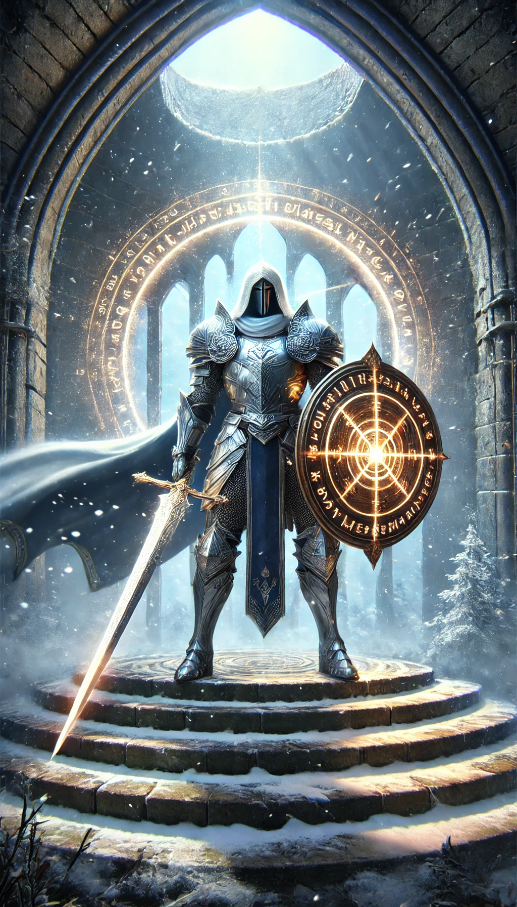
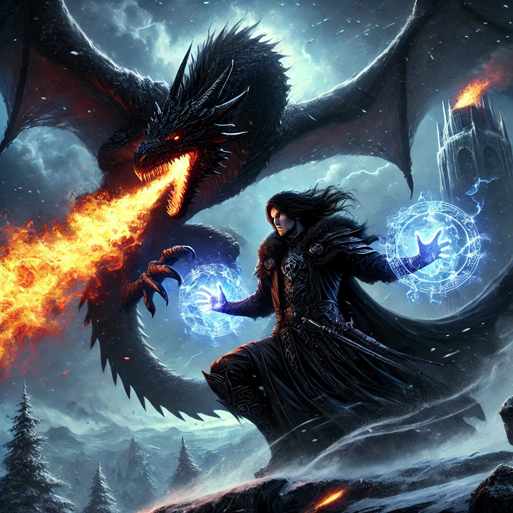

El Último Asalto en la Cima
En la helada cumbre de la montaña, donde la nieve arremolinada se entrelazaba con el viento gélido, se alzaba una antigua torre que se alzaba como un centinela de piedra. En su cima, se desarrollaba una batalla que resonaría a través de los siglos.
El caballero, Sir Aric, se encontraba en el centro de la cima de la torre, su figura imponente envuelta en una armadura brillante que reflejaba la pálida luz del sol. En su mano derecha, empuñaba la Espada Sagrada, cuya hoja resplandecía con una luz celestial. En su mano izquierda, el Escudo de la Protección, adornado con runas antiguas que repelían la magia. El aire estaba cargado de tensión, y los copos de nieve danzaban en un vórtice que parecía presagiar el conflicto inminente.
Frente a él, el mago oscuro, Malveth, estaba montado en un dragón negro de escamas como el ébano, que rugía con una furia aterradora. Malveth era el maestro de las artes elementales, y sus ojos brillaban con la intensidad de una tormenta en el corazón de la tormenta. Su capa ondeaba como una sombra, y en sus manos se formaban esferas de fuego, hielo y relámpagos, mientras preparaba el ataque final.
La batalla comenzó con un estruendoso rugido del dragón, que lanzó una cortina de llamas infernales hacia el caballero. Sir Aric levantó su escudo, el cual absorbió el fuego con un destello resplandeciente. Luego, con un movimiento decidido, contrarrestó con un corte certero de su espada, enviando un rayo de energía sagrada hacia el dragón.
Malveth, sin embargo, no se dejó intimidar. Con un gesto brusco, desató una tormenta de hielo que envolvió a Sir Aric, cubriendo la torre con una capa de escarcha que resbalaba y dificultaba el movimiento. Sir Aric, aunque ralentizado, avanzó con determinación, utilizando la espada para romper el hielo y despejar su camino.
El mago lanzó hechizos de tierra y aire, haciendo que rocas y ráfagas de viento se estrellaran contra el caballero, pero cada ataque era bloqueado por el escudo o desviado por la espada. La batalla era un juego de desgaste, donde la habilidad de Malveth para manipular los elementos chocaba con la resistencia inquebrantable de Aric.
En un momento decisivo, Malveth conjuró una ola de energía oscura que arrasó con todo a su paso. Sir Aric se lanzó al suelo, bloqueando la ola con el escudo, que comenzó a agrietarse bajo la presión. La espada sagrada, sin embargo, brilló intensamente, restaurando el escudo momentáneamente y permitiendo a Aric levantarse nuevamente.
Con un grito de desafío, Sir Aric cargó hacia el dragón, esquivando los ataques elementales con agilidad sorprendente. Con un golpe preciso y determinado, la Espada Sagrada encontró su objetivo en el punto vulnerable del dragón, deslumbrando a la bestia con una luz celestial.
El dragón rugió en agonía y, viendo el desenlace inevitable, Malveth intensificó sus hechizos en un último esfuerzo desesperado. Sin embargo, el caballero, ahora impulsado por una fuerza renovada, bloqueó y contrarrestó cada ataque con una habilidad magistral. Finalmente, con un golpe final y decisivo, la Espada Sagrada cortó a través del aire y atravesó el corazón del mago oscuro.

Malveth se desplomó, y con él, el dragón negro, herido de muerte, dio un último rugido de furia antes de dar una última zancada hacia el vacío. En un intento desesperado por salvarse, el dragón se alzó en el aire, alzándose en una huida precipitada mientras el cuerpo de su amo caía.
La torre, antes envuelta en el caos de la batalla, quedó en un silencio sepulcral. Sir Aric, exhausto pero victorioso, se arrodilló en la cima, la Espada Sagrada aún brillando con la luz de la justicia. Los primeros rayos del amanecer iluminaban la escena, y el caballero, aunque agotado, levantó la espada hacia el cielo en señal de triunfo.
La montaña, ahora libre del oscuro hechizo de Malveth, se envolvió en un manto de paz. Sir Aric, con el peso de su victoria sobre sus hombros, descendió de la torre, sabiendo que había salvado su mundo de una oscuridad que había amenazado con consumirlo.